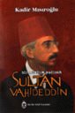

- HTML5'in yeni elementleri. [Link][]
- "CSS Planlama: Sabit, Elastik ve Akıcı" anlatan İngilizce güzel bir makale. [Link][1]
- CSS ile güzel menü yapımını anlatan geniş çaplı ve güzel İngilizce bir makale. [Link][2]
- CSS tabanlı web siteleri oluşturmanın 6 önemli konusu. [Link][3]
- Regular Expression test etmek için javascript ile ...
Internet Explorer İşaret kutularının(checkbox) onchange tetiklemesindeki sorun ve çözüm önerisi
Aslında konuyu başlıkta anlattım. İşaret kutularına onchange ekleyip tetiklemeye çalışınca çalışmıyor. Firefox'da çalışıyor sorunun çözümü
<p> <input type="checkbox"
onchange="document.getElementById('spDegistir').innerHTML = 'Checked: ' + this.checked;" id="change">
Bu kod Internet Explorer'da çalışmayacaktır. Bizde bunun yerine onclick tetiklemesini kullanacağız.
<p> <input type="checkbox"
onclick="document ...
devamını oku08 Ağustos 2007 Web'den Seçme Haberler
- BluPrint CSS Anaçatısını(Framework) çıkardı. Amaç aynı şeyleri kopyalayıp yapıştırma zahmetinden kurtulmak. Çok güzel bir düşünce şimdilik test aşamasında olduğu için projelerinizde kullanılması önerilmiyor. Çok güzel bir çalışma olmuş. Link
- CSS hata yakalama araçları. Link
- 100% Kolay okuma standartlarının sıralandığı güzel bir İngilizce makale. Link
- Negatif kenar boşluğununu pozitik kenarları ...
Sultan Abdulaziz - Hafız Mehmet Bey
devamını oku Sultan Abdulaziz'in
mabeyencilerinden Hafız Mehmet Bey'in yaşadıkları olayları anlattığı bu
kitap 70 küsür sayfalık küçük bir eser ama içeriği güzel. Ancak ben size
yinede Sultan Abdulaziz ile ilgili Yılmaz Öztuna'nın Bir Darbenin Anatomisikitabını öneririm. Bu kitap Sultan Abdulaziz'e karşı
darbecilerin yarenleri tarafından yazılmış bir risaleye ...
Sultan Abdulaziz'in
mabeyencilerinden Hafız Mehmet Bey'in yaşadıkları olayları anlattığı bu
kitap 70 küsür sayfalık küçük bir eser ama içeriği güzel. Ancak ben size
yinede Sultan Abdulaziz ile ilgili Yılmaz Öztuna'nın Bir Darbenin Anatomisikitabını öneririm. Bu kitap Sultan Abdulaziz'e karşı
darbecilerin yarenleri tarafından yazılmış bir risaleye ...Kenar Boşluğu(Margin) Çökmesi
Daha önceki makalelerimde devamlı margin kelimesini kullandım ancak bu makaleyi yazarken karşıma margin(marj) yerine Türkçe kenar boşluğunu kullanabileceğimi gördüm. Bu makalede ve sonraki makalelerimde bu şekilde kullanacağım. Makalelerimi yazarken devamlı Türkçe kelimeler kullanmayı tercih ediyorum, ancak bazı kelimelerin karşılılarını bulmakta zorlanıyorum. Neyse asıl konuya geçelim.
Kenar boşluğu çökmesi nedir ...
devamını oku05 Ağustos 2007 Web'den Seçme Haberler
- Mürekkep.org "Blogküre’ye sorduk: com, org, net… Domain tercihinde hangisini neden seçiyorsunuz ?" anketi sonuçlanmış. Link
- Javascript ile yapılmış güzel bir scroll efekti. Link
- Firefox'un eklenti kurmadan bize sağladığı 10 avantaj. Link
- Google Reader Blog sahibi kullanıcılarına takip ettikleri rss linklerini bloglarında gösterme imkanı sağlıyor artık. Link
- Adsl kullanıcılarına ...
Sultan Vahideddin - Kadir Mısıroğlu
Okullarda oktulan tarih içinde en çok eleştirilen ve vatan haini olarak nitelenen Sultan Vahideddin hakkında bir bakıma karşıt görüşü savunan Kadir Mısıroğlu bu kitapla bize Sultan Vahideddin'i geniş kapsamlı olarak değerlendirme imkanı sunuyor. Ben şuna inanıyorum ki yakın tarihimize yabancı bırakılmış bir gençlik yetişiyor ve bu geleceği görmemize engel ...
devamını oku03 Ağustos 2007 Web'den Seçme Haberler
- Ajax'a dair Temmuz ayı bilgileri için tıklayınız. Link
- CSS dokümanlarının hafızaya(cache) atılmasını engellemek hakkında bir makale. Link
- Yahoo YUI gelişmiş metin editörü çıkarmış. Link
- Web sitenizin farklı web tarayıcılarında nasıl göründüğünü test etmek için bir site. Link
- Web tasarımcılarının işini kolaylaştıran araçlardan biri Xray Firebug benzeri bir araç ...
CSS İpuçları 13 - CSS'de Cellspacing="0" nasıl yakalarız
Artık sayfalarımızı CSS ile oluşturup şekillendiriyoruz. Tabloların Cellspacing="0" atamasını css ile nasıl yaparız. İşte cevabı:
table{ border-spacing: 0px; border-collapse: collapse; }
bu kadar.
Kaynak
devamını okuFİLİSTİN DRAMI'NIN DÜŞÜNDÜRDÜKLERİ - Kadir Mısıroğlu
devamını oku Yahudilerin Filistin
topraklarını almak için yaptıklarını gösteren güzel bir kitap.
Ayrıntıları ile değil işin özünü anlatan ve olaya farklı yönlerden bakan
bir kaynak. Zamanında İngilizlerin Filistin'de federe bir devlet kurmak
istemeleri ve bu devletin başına bir Osmanlı hanedanını getirmek
istemleri gibi ilginç bilgileride içeren güzel bir kitap. Ayrıntılı
bilgi ...
Yahudilerin Filistin
topraklarını almak için yaptıklarını gösteren güzel bir kitap.
Ayrıntıları ile değil işin özünü anlatan ve olaya farklı yönlerden bakan
bir kaynak. Zamanında İngilizlerin Filistin'de federe bir devlet kurmak
istemeleri ve bu devletin başına bir Osmanlı hanedanını getirmek
istemleri gibi ilginç bilgileride içeren güzel bir kitap. Ayrıntılı
bilgi ...